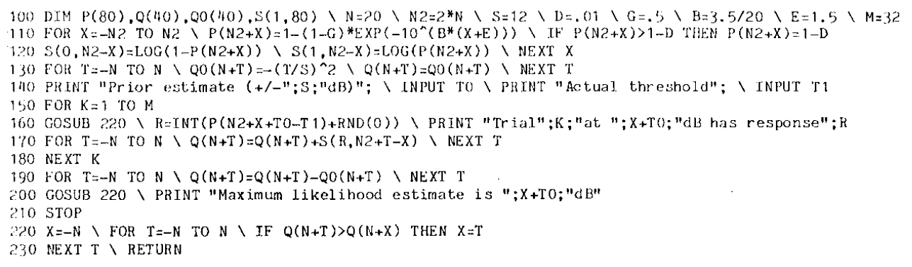

Document
Paper here!
Notes
My own notes
A brief summary
-
Abstract
- Psychometric Function: Relation between a physical measure of a stimulus and the probability of a particular psychophsical response.
-
Assumptions
- The psychometric function has the same shape under all conditions when expressed as a function of logaritmic intensity. From condition to condition, it defers only after a critical value, named T.
- The parameter T does not vary trial to trial.
- Individual trials are statistically independent.
- Theory
- Theory of it is mostly the same with the paper related to it. Go to the main page for it.
- Practice
- You may see the other related paper's succes, failure, and QUEST functions to grasp exactly the same.
-
A BASIC Program to Implement QUEST
